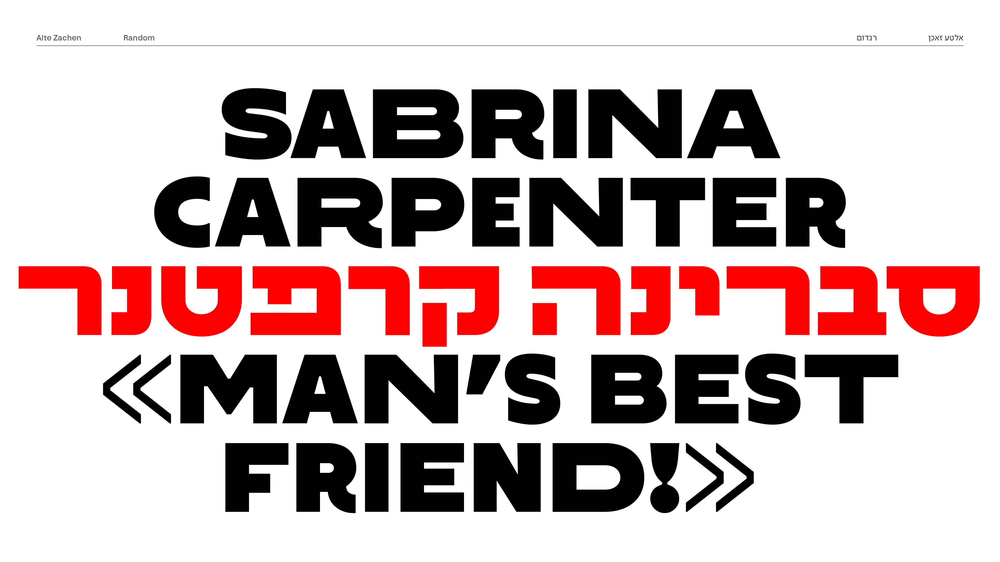
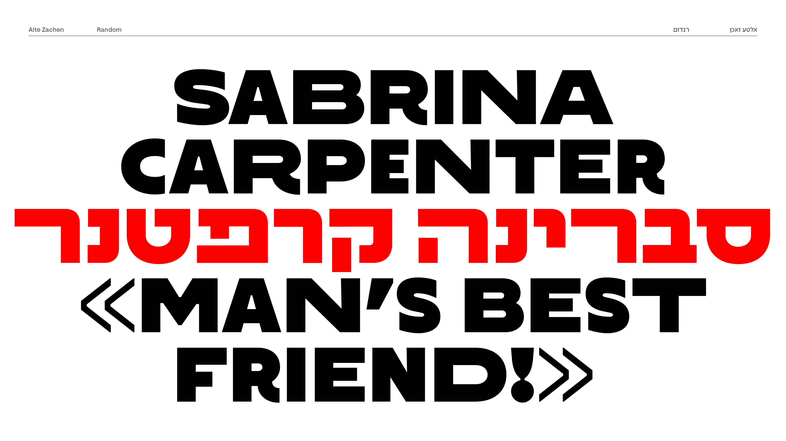
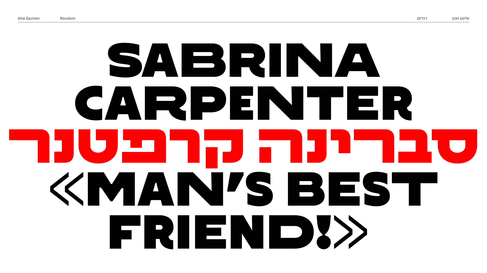
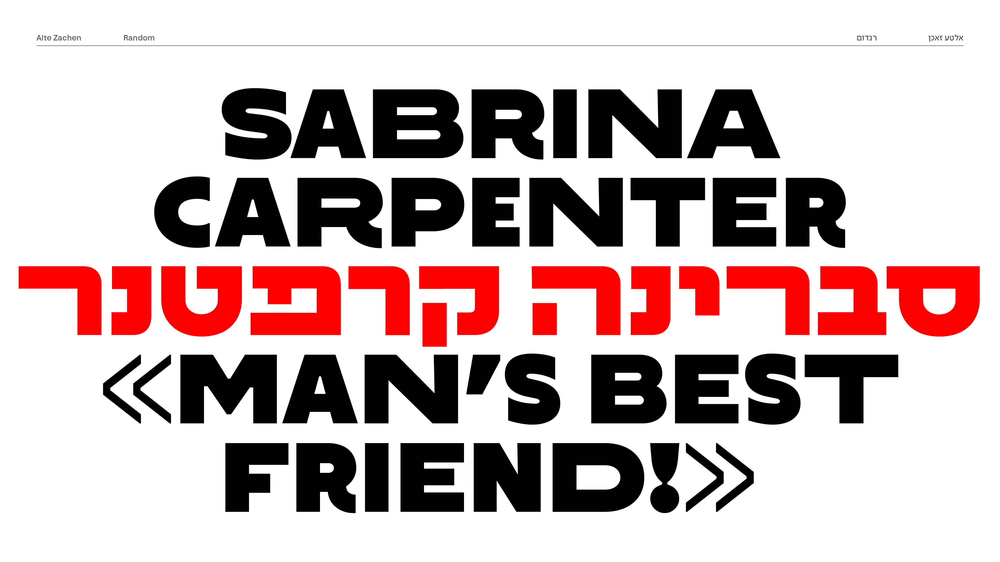

 

אלטע זאכן הוא פונט עברי בהשראת לטרינג וכרזות מודפסות משנות ה־30 וה־40, תקופה שבה עוצבה השפה החזותית של היישוב העברי בארץ ישראל. הפונט שואב השראה מלטרינג שצוייר במיוחד עבור כרזות תרבות, אירועים ומוסדות. מקור ההשפעה המרכזי הוא עבודותיו של רודי (דויטש) דיין, שעיצב כרזות ואותיות מלאות אופי עבור המרחב הציבורי המתהווה.
הפונט משלב שלושה משקלים עיקריים – רגיל, חצי־רחב ורחב – שנבנו מתוך מחקר צורני של טיפוגרפיה ישנה, אך הותאמו לשפה עכשווית. לצד שלושת המשקלים קיים גם משקל רנדום המאפשר ערבוב חופשי ביניהם ויוצר וריאציות טקסטורליות בטקסט, בדומה ללטרינג ידני.